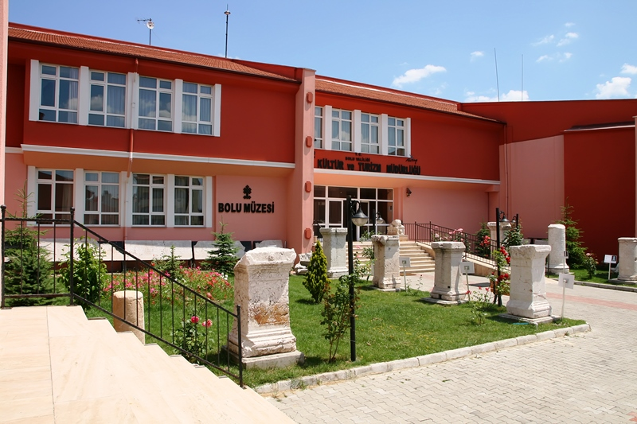
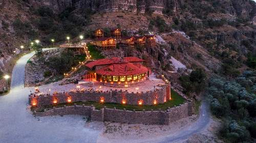
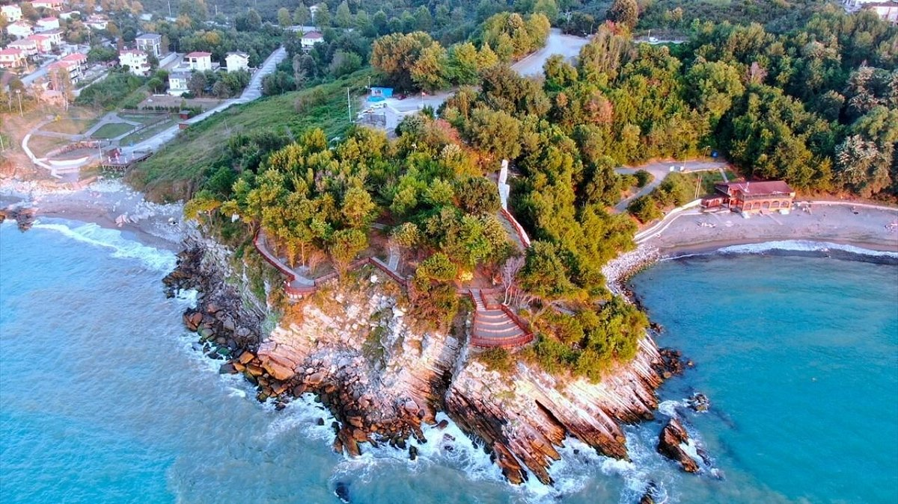

Bolu
Bolu'da doğa kucaklar, ruh dinginleşir; her mevsimin ayrı bir hikayesi vardır bu cennet köşesinde.

Bolu'de bulunan yaylaları yapısı, turistlerin ilgisini çeker.
Bolu tarihi yapılarıyla dikkat çeker ve özellikle nehirleri ile bilinir.
Bolu tarihi yapılarıyla dikkat çeker ve özellikle zeytinyağlı yemekleri ile bilinir.

Bolu Müzesi
Bölgenin zengin tarihini yansıtan, önemli arkeolojik eserlerin sergilendiği müze.

Seben Müzesi
Yöresel kültürü ve tarihi yansıtan etnografik eserler.

Akçakoca Kalesi
Bizans döneminden kalma tarihi kale ve deniz manzarası.